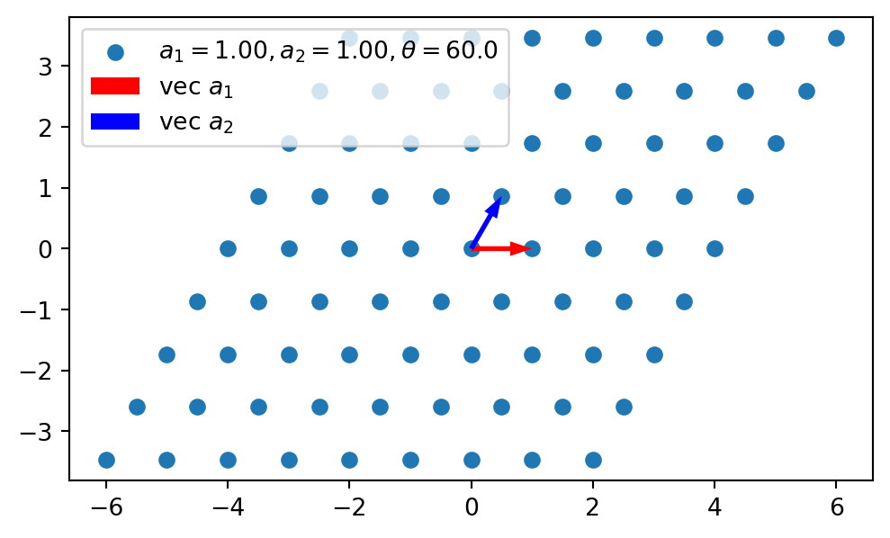

Mostrar código
# En el ambiente cargamos las opciones más comúnes de numpy, scipy y matplotlib
from pylab import *
# Definimos la magnitud de los vectores, a1 y a2
a1 = 1.0
a2 = 1.0
# Definimos el vector vec_a1
vec_a1 = array([ a1, 0])
# Definimos el vector vec_a2 con una rotación de un ángulo θ
θ = radians(60)
vec_a2 = array([a2*cos(θ), a2*sin(θ)])
# Tomamos un subconjunto del conjunto de enteros [-4,-3,-2,-1,0,1,2,3,4]
# tanto para n1 como n2
n1,n2 = meshgrid ( arange( -4, 5 ), arange( -4, 5 ) )
# Con el fin de realizar las diferentes combinaciones lineales nos será
# útil tener los coeficiente como un arreglo en una dimensión
n1 = n1.flatten()
n2 = n2.flatten()
# Colocamos los vectores en una matriz, donde cada renglón es un vector
A = array( [vec_a1,vec_a2] )
# Colocamos los coeficientes en una matriz
coefs = column_stack((n1,n2))
# Obtenemos los puntos de la red al multiplicar ambas matrices
red = dot( coefs,A )
# Graficamos
# Definimos una figura -> fig y sus ejes -> ax
fig,ax = plt.subplots(figsize=((6,6)))
# Graficamos con puntos los puntos de la red en un sistema de coordenadas cartesiano.
# En el eje x colocamos los puntos de la red y en el eje y asignamos cero.
# ax.scatter( [coordenadas: x] , [coordenadas: y], label="Etiqueta que identifica los datos")
ax.scatter(red.T[0], red.T[1], label=f"$a_1={a1:.2f}, a_2={a2:.2f}, θ={rad2deg(θ):.1f}$")
# Escribimos ax.scatter ya que se grafican los puntos (scatter) en los ejes (ax).
# Graficamos los vectores de red
ax.arrow(0,0,vec_a1[0],vec_a1[1],width=0.08,lw=0,label="vec $a_1$",color="red",length_includes_head=True)
ax.arrow(0,0,vec_a2[0],vec_a2[1],width=0.08,lw=0,label="vec $a_2$",color="blue",length_includes_head=True)
# Colocamos el cuadro de leyenda
ax.legend()
ax.set_aspect('equal')
# Mostramos la gráfica
plt.show()
